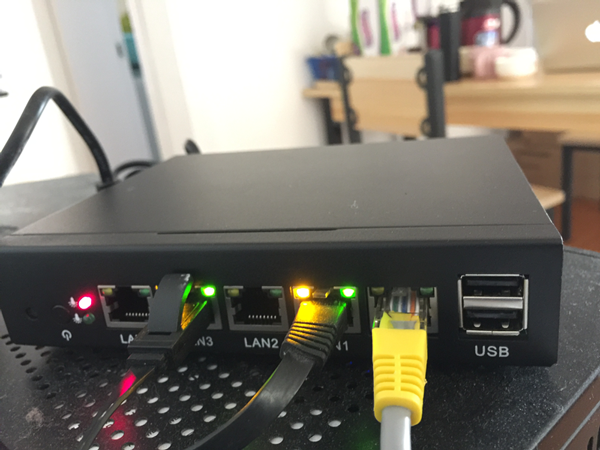
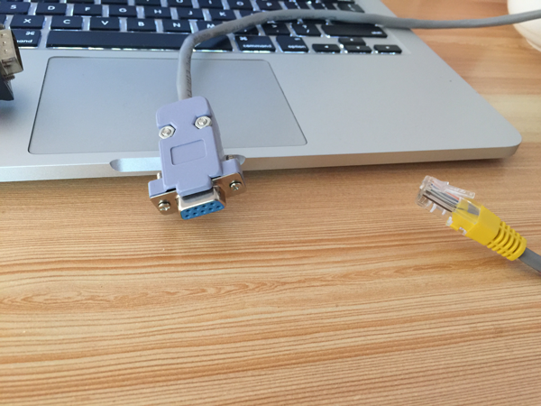

制作你自己的终极X86软路由
- By 毕勤
- Sun 02 April 2017
原因
自从当年被AutoddVPN项目带入路由器翻墙的坑，断断续续买过的路由器有差不多二十来个了。从最低端的400Mhz单核的Atheros芯片到双核1G的高端路由，从小到只有火柴盒大小的WT-32020到比砖头还大的R7000，基本都玩了个遍，但也都很无聊，因为最终都是刷openwrt或者dd-wrt，后者的可玩性其实还更差。
直到年初入了EdgerouterX，才发现路由只做路由，无线交给AP，配合上linux系统才是真正的路由器王道。各司其职可以充分发挥各个环节的顶级性能，越接近原生linux的系统也越容易解决各类软件的安装问题，需要的软件包甚至可以直接在路由器上编译和部署。
虽然基于ASIC芯片的路由在效率上更高，可以用更低的主频实现百兆甚至千兆的转发，但那是在路由主控CPU普遍主频只有300~400Mhz的时代的必需产物。当Intel把双核、四核的x86功率做到个位数以后，直接用高性能的x86搭建路由已经绝对是性能溢出的选择。
从性价比上说，现在的高端路由普遍价格在1000元以上，部分甚至达到了2000~3000元的范围，当路由器价格达到这个范围的时候我就很难理解为什么还要去买这种一体化的高端路由了。一台X86小主机的价格一般不超过1000元，加1000元可以买一个顶级的ubnt的AP，2000元就可以给你带了最好的组合了，为什么还要买这种现货路由?
硬件部分
主机的选择
感谢万能的淘宝，我在上面找到了一款有4个千兆以太网和一个RF45接口形式的RS232串口的J1900 CPU的小主机，店铺本身对这货的定义就是软路由主机。这个完全满足我的需求：

- 只要有线路由功能，无线功能可以交给专业的AP去处理。
- 金属机身且体积小巧(15cmx13cmx3cm)，比很多外壳是塑料但里面全是空气的家庭路由还要小，可以轻松放进弱电箱，反正不涉及无线，不担心信号衰减。
- 带有RS232接口便于调试，虽然SSH登录是很方便的，但一个IPtables命令错误后你就可以把自己挡在了路由器之外，这个时候你绝对不希望需要插上键盘和显示器才能调试。
- J1900也就是Bay Trail平台其实已经好几年了，这个平台的开发应用非常多也很成熟，linux的支持也很完美。
这个小主机基本是完美的，除了一个地方:串口。这其实是个很尴尬的不满，因为机器上的串口是按照标准的EIA-561标注来接的，这看起来很合理，问题是这年头你一旦把串口做成RJ45的接口，10台机器有9台都是按照思科的那套标准来接的。以至于你现在去买USB Console调试线，只能买到思科标准的线，EIA-561标准的线只能自己做，如果用思科的Console线去调试，你会发下从主机出来的TX是好的，但RX永远收不到数据。
于是我找了一根铜芯比较硬的网线，从实验室翻出一个DB9母头和塑料卡壳，自己做了一个RJ45转DB9母头的转接线，后面再接上普通的USB转DB9工头的USB串口线就可以了。其实RJ45转DB9那里，只需要把地线和TX、RX三根线接出来就可以了，因为大部分情况下我们并不会用到流控。

这里简单说一下RJ45转DB9该怎么接线:
- 首先明确我们不用流控，只需要找GND\TX\RX三根线。
- DB9上的GND是第5pin,第几Pin在哪里，DB9上都会有丝印告诉你的，很容易找。
- RJ45上找GND也很简单，用万用表的通断测试档，一端接RJ45的外壳，另一端一根根的试，导通的就是接地的GND。
- DB9上的RX/TX是2/3 Pin，这么多年以来我一直都对RX/TX的定义很困扰，因为针对不同的主从设备，RX和TX根本就是个混淆的概念，我的RX就是你的TX，你的RX就是我的TX，这里我们先不管，找出2/3Pin再说。
- RJ45上的TX/RX怎么找，如果有示波器当然就是一分钟的事，如果没有，只能找根电线，两根两根的短接，当然前面找到的GND可以先排除。标准的EI-561接法中RX/TX是相邻的，所以从水晶头那里可以很容易的找出哪些是相邻的，试几次就可以了。在Linux中开两个console,一个不停的往/dev/ttyS0写数据，一个cat /dev/ttyS0，当RX/TX短接时，你就可以在cat /dev/ttyS0的窗口看到自己写入的数据了。
- 现在你知道了DB9和RJ45上的RX/TX是哪两组Pin了，但具体谁是TX谁是RX并不清楚，不重要，反正就两种组合，在焊死之前试一次不就行了，看起来很傻，但这样效率最高。
软件部分
系统的选择与安装
其实我刚开始的时候很想用Vyos，这个系统其实就是EdgeRouter的EdgeOS的开源版本，基于Debian构建。而且新测试版的Vyos是基于Debian Jessie的，非常新，软件支持后期会很方便。
但最后放弃的原因是，测试版确实不稳定啊，我连着试了两天的test build，安装后全部卡在了grub menu那里无法进入系统。old stable版本虽然安装没问题也能工作，但它是基于deian squeeze的，squeeze连LTS支持都结束了啊，实在不能忍。
最后，我决定回到正常的linux发型版来，最终的选择是Debian Jessie amd64版本。我服务器本身的操作系统就是debian，一直用来编译shadowsocks server，非常的方便，其实ubuntu应该也差不多，只是个人喜好了。
安装过程没太多好说的，只是最后选择组件的时候建议不要安装桌面环境，纯粹是浪费，除非你想要这个机器在做路由的同时也做HTPC用，问题是，这货只有VGA输出没有音频输出啊，做HTPC也不现实嘛。SSH-Server还是装上，毕竟网线比串口线方便。
后期的很多操作我都建议你直接用root账号操作，因为user权限根本不够，整天用sudo不会比直接用root安全多少，反正你也不看任何warning。
开始Serial Console
为什么要开启Serial Console?因为我们有一个串口...
这当然不是合理的理由，主要原因有两个，一个是我们后期的iptables操作可能会让ssh短期无法连接，另一个是serial console的层级更低，几乎等同于显示屏，可以便于我们调试一些底层boot信息。
开启serial console其实很简单，只需要在grub配置中添加一个console到启动想就可以了，具体的方法是编辑/etc/default/grub文件，修改后的内容如下：
GRUB_DEFAULT=0
GRUB_TIMEOUT=1
GRUB_DISTRIBUTOR=`lsb_release -i -s 2> /dev/null || echo Debian`
GRUB_CMDLINE_LINUX_DEFAULT=""
GRUB_CMDLINE_LINUX="console=tty0 console=ttyS0,115200"
GRUB_TERMINAL=serial
GRUB_SERIAL_COMMAND="serial --speed=115200 --unit=0 --word=8 --parity=no --stop=1"
- 修改GRUB_TIMEOUT是为了节省启动时间
- GRUB_CM_LINE_LINUX那行表示我们要同事开启两个console，一个是tty0(显示器)，另一个是ttyS0(串口)，串口速率是115200。
- GRUB_SERIAL_COMMAND是设定串口的参数，这里是最普通的8比特数据，1比特停止位，无校验。
修改好之后运行以下命令重新生成grub.cfg文件，重启就可以看到serial console了。
grub-mkconfig -o /boot/grub/grub.cfg
在mac的terminal上，可以直接用以下命令连接到串口console
screen /dev/tty.usbXXXX 115200
这里的XXXX会因为不同的设备而不同，是由你的USB转串口线决定的。
WAN与Bridge LAN
这里我把LAN1口作为WAN口来使用，我这里只考虑WAN口从上游的DHCP服务器自动获取IP的情况，如果需要WAN口有PPPOE拨号功能，请自行查找相关的文档。
其实在高端的商用路有里，每个LAN都是有一个独立的网段的，这样可以给不同的区域和部门划分不同的访问区域。但在家用路由里，你绝对不希望手机连上WIFI后和访问不了在另一个网段里的NAS。所以我们要把LAN2,LAN3,LAN4并入一个网段，这个时候就需要在这三个接口之间做桥接，生成一个虚拟的接口。
为了简单的实现这个功能，我们安装bridge-utils工具:
apt-get install bridge-utils
然后我们修改/etc/network/interfaces文件如下：
auto lo
iface lo inet loopback
auto eth0
allow-hotplug eth0
iface eth0 inet dhcp
auto br0
allow-hotplug br0
iface br0 inet static
address 192.168.88.1
network 192.168.88.0
netmask 255.255.255.0
broadcast 192.168.88.255
bridge-ports eth1 eth2 eth3
- 这里的192.168.88.1是路由器本身在LAN中的地址，也会是LAN中设备以后的网关。
- 192.168.88.0是网络号，因为我们用了24位掩码，也就是255.255.255.0。
- 192.168.88.255是广播地址，这是常识，主机位全1的地址是广播地址。
- 我们把eth1 eth2 eth3，也就是LAN2,LAN3,LAN4 bridge成为一个新的接口br0，让这些端口处于一个网段中。
- auto表示速率自动协商，allow-hotplug见字面意思。
- lo是回环链路，系统默认不用修改。
- iface eth0 inet dhcp表示eth0也就是LAN1或者说我们的WAN的地址是通过DHCP获取的。
伟大的Dnsmasq
Dnsmasq不仅是路由器翻墙的重大功臣，也是构建路由器的重要法宝，因为一个小巧的dnsmasq就可以帮我们完成两项工作，DNS-Forwarder和DHCP Server。在作为路由器来用时，我们先使用到了它的DHCP Server功能，直接用apt就可以安装好dnsmasq了。
apt-get install dnsmasq
查看一下dnsmasq的版本信息:
root@debian:~# dnsmasq -v
Dnsmasq version 2.72 Copyright (c) 2000-2014 Simon Kelley
Compile time options: IPv6 GNU-getopt DBus i18n IDN DHCP DHCPv6 no-Lua TFTP conntrack ipset auth DNSSEC loop-detect
很好，有ipset功能。下面我们修改dnsmasq的配置如下：
root@debian:~# cat /etc/dnsmasq.conf
interface=br0
dhcp-range=192.168.88.10,192.168.88.250,72h
conf-dir=/etc/dnsmasq.d/
- interface为br0，表示让dnsmasq监听br0也就是我们的LAN接口，处理DNS和DHCP请求。
- dhcp-range表示了我们允许分配的地址范围，72h表示续期时间为72小时
- conf-dir表示这个目录下的文件也将作为dnsmasq的配置文件被读入，我们可以把其他的非路由核心功能的配置放到这个目录下
- 具体给Dnsmasq配置哪些服务器用于解决DNS污染，是翻墙问题与搭建路由无关，这里就不说了。
/etc/init.d/dnsmasq restart重启dnsmasq服务，然后把电脑接入LAN2~LAN4接口，应该就会自动分配到IP了。
配置系统DNS
默认情况下，系统的dhcp client会自动从上游获取DNS Server，但是大部分情况下国内的上级DNS Server都是被污染的，除非你在我家偷接路由。
我们可以通过一些技术手段来让Dnsmasq使用干净的DNS服务器并提供给LAN，但路由器本身的DNS确是被污染的，这会让你在路由器上进行一些涉及联网的操作变得很奇葩，所以我们希望把路由器本身的DNS也设置成Dnsmasq的127.0.0.1。
这部很简单，只需要编辑/etc/dhcp/dhclient.conf文件，找到：
#prepend domain-name-servers 127.0.0.1;
把前面的注释符号删掉，这样就会默认在/etc/resolv.conf中添加一个127.0.0.1的DNS服务器，也就是Dnsmasq的Server地址。
然后找到：
request subnet-mask, broadcast-address, time-offset, routers,
domain-name, domain-name-servers, host-name,
netbios-name-servers, netbios-scope, interface-mtu;
把domain-name-servers删掉，表示不同dhcp服务器请求dns服务器地址，这样下次WAN再连上DHCP网络，/etc/resolv.conf就只有127.0.0.1这一个DNS服务器了。
上网
嗯，我们的路由器现在已经有了一个DNS服务(转发)器可以给我们解析域名，有了DHCP服务器可以给我们分配IP，甚至路由器本身也不用担心DNS污染了，唯一的问题是，我连上这个路由器后没法上网...
这，好尴尬啊。
其实路由器的核心功能，就是routing，也就是给联网请求选择通路。我们从LAN口接入，想要上网的话，就必须把从LAN口接收到的请求转发到WAN口上，再把从WAN口上收到的数据发回到LAN口，这不是就是NAT嘛，iptables就可以搞定！
配置IPtables转发
首先我们先清空可能存在的一起iptables规则：
iptables -F
iptables -X
iptables -t nat -F
iptables -t nat -X
iptables -t mangle -F
iptables -t mangle -X
iptables -t raw -F
iptables -t raw -X
然后添加以下规则：
iptables -A FORWARD -i br0 -s 192.168.1.0/255.255.255.0 -j ACCEPT
iptables -A FORWARD -i eth0 -d 192.168.1.0/255.255.255.0 -j ACCEPT
iptables -t nat -A POSTROUTING -o eth0 -j MASQUERADE
- 前两条表示接受从br0和eth0接口输入的数据
- 第三条表示把数据最终的POSTROUTING定向到eth0也就是WAN口上，使用MASQUERADE转译是为了保证NAT出去的地址是固定的。
使能IPV4转发
linux系统默认并没有开始ipv4和ipv6数据的转发，所以你光配置iptables转发是不被支持的，这里需要编辑/etc/sysctl.conf文件，找到:
#net.ipv4.conf.default.forwarding=1
把这个注释符删掉开启IPV4转发，但这个修改要重启后才生效，如果要立刻生效，直接使用以下的暴力命令:
echo 1 > /proc/sys/net/ipv4/ip_forward
一些默认的防火墙安全规则
防火墙不能整天不务正业只顾着上网，至少应该有一些基本的安全规则，添加如下基本规则：
iptables -P INPUT DROP
iptables -P OUTPUT ACCEPT
iptables -P FORWARD DROP
iptables -I INPUT 1 -i lo -j ACCEPT
iptables -I INPUT 1 -i br0 -j ACCEPT
iptables -A INPUT -m state --state ESTABLISHED,RELATED -j ACCEPT
固化Iptables规则
你可以用iptables-save和iptables-restore配合rc.local启动脚本来保存恢复防火墙规则，但其实有更简单的做法:iptables-persistent。
直接apt-get install iptables-persistent就可以了，在安装的过程中就会询问你是否保存当前规则了，而且ipv4和ipv6的都会保存，虽然我们没用到后者。以后每次启动的时候iptables-persistent都会自动帮我们加载保存好的规则。
不服跑个分
如果我们费了这么大心思装好的路由最后的性能是个渣渣，那我们还用它干啥。所以我们来跑个分，在路由器上装好iperf3之后开启Server模式:
iperf -s -p 6000
从macbook测试到路由器的速度：
biqins-MBP:lifetyper.com lifetyper$ iperf3 -c debian -p 6000
Connecting to host debian, port 6000
[ 6] local 192.168.88.165 port 52954 connected to 192.168.88.1 port 6000
[ ID] Interval Transfer Bandwidth
[ 6] 0.00-1.00 sec 112 MBytes 938 Mbits/sec
[ 6] 1.00-2.00 sec 112 MBytes 939 Mbits/sec
[ 6] 2.00-3.00 sec 112 MBytes 939 Mbits/sec
[ 6] 3.00-4.00 sec 112 MBytes 939 Mbits/sec
[ 6] 4.00-5.00 sec 112 MBytes 939 Mbits/sec
[ 6] 5.00-6.00 sec 112 MBytes 939 Mbits/sec
[ 6] 6.00-7.00 sec 112 MBytes 939 Mbits/sec
[ 6] 7.00-8.00 sec 112 MBytes 939 Mbits/sec
[ 6] 8.00-9.00 sec 112 MBytes 940 Mbits/sec
[ 6] 9.00-10.00 sec 112 MBytes 939 Mbits/sec
- - - - - - - - - - - - - - - - - - - - - - - - -
[ ID] Interval Transfer Bandwidth
[ 6] 0.00-10.00 sec 1.09 GBytes 939 Mbits/sec sender
[ 6] 0.00-10.00 sec 1.09 GBytes 939 Mbits/sec receiver
从另一个ubuntu主机测试到路由器的速度:
lifetyper@ubuntu:~$ iperf3 -c debian -p 6000
Connecting to host debian, port 6000
[ 4] local 192.168.88.57 port 50410 connected to 192.168.88.1 port 6000
[ ID] Interval Transfer Bandwidth Retr Cwnd
[ 4] 0.00-1.00 sec 107 MBytes 897 Mbits/sec 0 171 KBytes
[ 4] 1.00-2.00 sec 107 MBytes 896 Mbits/sec 0 188 KBytes
[ 4] 2.00-3.00 sec 107 MBytes 900 Mbits/sec 0 188 KBytes
[ 4] 3.00-4.00 sec 107 MBytes 896 Mbits/sec 0 205 KBytes
[ 4] 4.00-5.00 sec 107 MBytes 898 Mbits/sec 0 205 KBytes
[ 4] 5.00-6.00 sec 107 MBytes 899 Mbits/sec 0 205 KBytes
[ 4] 6.00-7.00 sec 107 MBytes 898 Mbits/sec 0 205 KBytes
[ 4] 7.00-8.00 sec 107 MBytes 901 Mbits/sec 0 205 KBytes
[ 4] 8.00-9.00 sec 107 MBytes 899 Mbits/sec 0 205 KBytes
[ 4] 9.00-10.00 sec 107 MBytes 900 Mbits/sec 0 205 KBytes
- - - - - - - - - - - - - - - - - - - - - - - - -
[ ID] Interval Transfer Bandwidth Retr
[ 4] 0.00-10.00 sec 1.05 GBytes 898 Mbits/sec 0 sender
[ 4] 0.00-10.00 sec 1.05 GBytes 898 Mbits/sec receiver
iperf Done.
然后在ubuntu主机开启iperf3服务器，从macbook测网内两机器互访速度:
biqins-MBP:lifetyper.com lifetyper$ iperf3 -c ubuntu -p 7000
Connecting to host ubuntu, port 7000
[ 6] local 192.168.88.165 port 53144 connected to 192.168.88.57 port 7000
[ ID] Interval Transfer Bandwidth
[ 6] 0.00-1.00 sec 105 MBytes 878 Mbits/sec
[ 6] 1.00-2.00 sec 104 MBytes 871 Mbits/sec
[ 6] 2.00-3.00 sec 104 MBytes 875 Mbits/sec
[ 6] 3.00-4.00 sec 105 MBytes 878 Mbits/sec
[ 6] 4.00-5.00 sec 105 MBytes 883 Mbits/sec
[ 6] 5.00-6.00 sec 106 MBytes 889 Mbits/sec
[ 6] 6.00-7.00 sec 104 MBytes 875 Mbits/sec
[ 6] 7.00-8.00 sec 106 MBytes 885 Mbits/sec
[ 6] 8.00-9.00 sec 106 MBytes 889 Mbits/sec
[ 6] 9.00-10.00 sec 106 MBytes 892 Mbits/sec
- - - - - - - - - - - - - - - - - - - - - - - - -
[ ID] Interval Transfer Bandwidth
[ 6] 0.00-10.00 sec 1.03 GBytes 882 Mbits/sec sender
[ 6] 0.00-10.00 sec 1.03 GBytes 881 Mbits/sec receiver
iperf Done.
网内互访的速度肯定比直接连路由慢一点，不过平均882Mbps，在用上千兆网之前，基本不要啥自行车了。
资源使用情况
最后来看看这个路由到底需要多少资源：
root@debian:/home/lifetyper# df -h
Filesystem Size Used Avail Use% Mounted on
/dev/sda1 28G 2.0G 25G 8% /
udev 10M 0 10M 0% /dev
tmpfs 381M 5.2M 376M 2% /run
tmpfs 951M 0 951M 0% /dev/shm
tmpfs 5.0M 0 5.0M 0% /run/lock
tmpfs 951M 0 951M 0% /sys/fs/cgroup
root@debian:/home/lifetyper# free -m
total used free shared buffers cached
Mem: 1900 139 1761 5 10 52
-/+ buffers/cache: 76 1824
Swap: 1285 0 1285
2G的磁盘，139M的内存，CPU占用上我用top看，最高的CPU占用程序就是top本身。我本来以为磁盘占用会挺多的，没想到在安装完全部组件，并且把shadowsocks编译环境都搭完之后也才2G，难怪之前别人用edgerouter lite 2G的U盘就可以直接在路由上编译软件包了。
一些小贴士(不定期更新)
给路由器一个名字
如果你不想每次ssh到路由的时候都输一串ip，其实我们完全可以给路由器一个名称，直接通过主机名来访问它。 这个很简单，直接修改/etc/hosts文件就可以了，因为dnsmasq是会从这里读取主机名的，读取之后主机名对于dnsmasq来说就像LAN里的主机一样是可以直接解析的，我们在/etc/hosts中添加:
192.168.88.1 debian
重启dnsmasq之后，我们就可以用类似ssh user@debian的方式登录路由了。
添加用户到sudo组
默认新建的非root用户权限很低，安装了sudo之后也因为默认不在sudo组内所以不能使用sudo命令，解决方法就是先用root登录，然后执行以下命令：
apt-get install sudo
adduser your_user_name sudo
退出之后再用刚才添加的用户名登录，就可以使用sudo了，如果有太多sudo命令要做，直接sudo bash就可以切到root用户了。